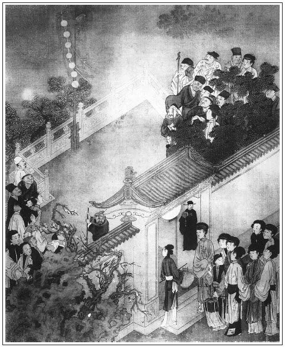

張回此回侈言西門之盛也，四架煙火，既雲門前逞放，看官眼底，誰不謂好向西門慶門前看煙火也。看他偏藏過一架在獅子街，偏使門前三架毫無色相，止用棋童口中一點。而獅子街的一架，乃極力描寫，遂使門前三架，不言俱出。此文字旁敲側擊之法。
門前煙火，卻在獅子街寫。月娘眾妾看煙火，卻挪在王六兒身上寫。奇棋至此！
文字不肯於忙處不著閒筆襯，已比比然矣。今看其於閒處，卻又必不肯徒以閒筆放過。如看燈，閒事也；寫鬧花燈，閒筆也。卻即於此處出王三官。文字無一懈處可擊。又善於掉空便入。便捷如此，真加并州快剪刀矣。
此回是描寫豪華，恐無甚花樣。故又用伯爵與二妓一派歇後語作生色花樣，又一樣章法也。
百忙裡，又寫桂姐、銀兒吃醋，人情無微不到。
詩曰：
星月當空萬燭燒，人間天上兩元宵。
樂和春奏聲偏好，人蹈衣歸馬亦嬌。
易老韶光休浪度，最公白髮不相饒。
千金博得斯須刻，吩咐譙更仔細敲。

話說西門慶打發喬家去了，走來上房，和月娘、大妗子、李瓶兒商議。月娘道：「他家既先來與咱孩子送節，咱少不得也買禮過去，與他家長姐送節。就權為插定一般，庶不差了禮數。」大妗子道：「咱這裡，少不的立上個媒人，往來方便些。」月娘道：「他家是孔嫂兒，咱家安上誰好？」西門慶道：「一客不煩二主，就安上老馮罷。」張夾子母同媒矣。於是，連忙寫了請帖八個，就叫了老馮來，同玳安拿請帖盒兒，十五日請喬老親家母、喬五太太並尚舉人娘子、朱序班娘子、崔親家母、段大姐、鄭三姐來赴席，與李瓶兒做生日，並吃看燈酒。一面吩咐來興兒，拿銀子早定下蒸酥點心並羹果食物。又是兩套遍地錦羅緞衣服，一件大紅小袍兒、一頂金絲縐紗冠兒、兩盞雲南羊角珠燈、一盒衣翠、一對小金手鐲、四個金寶石戒指兒。十四日早裝盒擔，叫女婿陳敬濟和賁四穿青衣服押送過去。張旁市井人待婿如此。喬大戶那邊，酒筵管待，重加答賀。回盒中，又回了許多生活鞋腳，俱不必細說。正亂著，應伯爵來講李智、黃四官銀子事，看見，問其所以。西門慶告訴與喬大戶結親之事：「十五日好歹請令正來陪親家坐坐。」伯爵道：「嫂子呼喚，房下必定來。」西門慶道：「今日請眾堂官娘子吃酒，咱每往獅子街房子內看燈去罷。」伯爵應諾去了，不題。
且說那日院中吳銀兒先送了四盒禮來，又是兩方銷金汗巾，一雙女鞋，送與李瓶兒上壽，就拜乾女兒。張夾此處方入銀姐，章法細甚。月娘收了禮物，打發轎子回去。李桂姐只到次日才來，見吳銀兒在這裡，便悄悄問月娘：「他多咱來的？」月娘如此這般告他說：「昨日送了禮來，拜認你六娘做乾女兒了。」李桂姐聽了，一聲兒沒言語。一日只和吳銀兒使性子，兩個不說話。繡眉無謂，可笑。張夾又是一對吃醋者。
卻說前廳王皇親家二十名小廝，兩個師父領著，挑了箱子來，先與西門慶磕頭。西門慶吩咐西廂房做戲房，管待酒飯。不一時，周守備娘子、荊都監母親荊太太與張團練娘子，都先到了。俱是大轎，排軍喝道，家人媳婦跟隨。張旁游舊家時，已有一影矣。月娘與眾姊妹，都穿著袍出來迎接，至後廳敘禮。與眾親相見畢，讓坐遞茶，等著夏提刑娘子到才擺茶。不料等到日中，還不見來。小廝邀了兩三遍，約午後才喝了道來，抬著衣匣，家人媳婦跟隨，許多僕從擁護。鼓樂接進後廳，與眾堂客見畢禮數，依次序坐下。先在卷棚內擺茶，然後大廳上坐。春梅、玉簫、迎春、蘭香，都是齊整妝束，席上捧茶斟酒。那日扮的是《西廂記》。
不說畫堂深處，珠圍翠繞，歌舞吹彈飲酒。單表西門慶打發堂客上了茶，就騎馬約下應伯爵、謝希大，往獅子街房裡去了。吩咐四架煙火，拿一架那裡去。晚夕，堂客跟前放兩架。旋叫了個廚子，家下抬了兩食盒下飯菜蔬，兩壇金華酒去。又叫了兩個唱的──董嬌兒、韓玉釧兒。原來西門慶已先使玳安雇轎子，請王六兒同往獅子街房裡去。玳安見婦人道：「爹說請韓大嬸，那裡晚夕看放煙火。」婦人笑道：「我羞剌剌，怎麼好去的，你韓大叔知道不嗔？」玳安道：「爹對韓大叔說了，教你老人家快收拾哩。因叫了兩個唱的，沒人陪他。」那婦人聽了，還不動身。
一回，只見韓道國來家。玳安道：「這不是韓大叔來了。韓大嬸這裡，不信我說哩。」婦人向他漢子說，「真個叫我去？」韓道國道：「老爹再三說，兩個唱的沒人陪他，張夾陪唱的，妙。請你過去，晚夕就看放煙火。你還不收拾哩！剛才教我把鋪子也收了，就晚夕一搭兒裡坐坐。保官兒也往家去了，晚夕該他上宿哩。」婦人道：「不知多咱才散，你到那裡坐回就來罷，家裡沒人，你又不該上宿。」說畢，打扮穿了衣服，玳安跟隨，逕到獅子街房裡來。來昭妻一丈青早在房裡收拾下床炕、帳幔、褥被，安息沉香薰的噴鼻香。繡眉請客來看煙火，卻收拾床鋪，妙甚。房裡吊著一對紗燈，籠著一盆炭火。張旁一絲不漏。婦人走到裡面炕上坐下。一丈青走出來，道了萬福，拿茶吃了。西門慶與應伯爵看了回燈，才到房子裡。兩個在樓上打雙陸。樓上除了六扇窗戶，掛著簾子，張旁細緻。下邊就是燈市，十分鬧熱。打了回雙陸，收拾擺飯吃了，二人在簾裡觀看燈市。但見：
萬井人煙錦繡圍，香車寶馬鬧如雷。
鰲山聳出青雲上，何處遊人不看來？
二人看了一回，西門慶忽見人叢裡謝希大、祝實念，同一個戴方巾的在燈棚下看燈，張旁文情得空便入。指與伯爵瞧。因問：「那戴方巾的，你可認的他？」伯爵道：「此人眼熟，不認的他。」張夾活賊。西門慶便叫玳安：「你去下邊，悄悄請了謝爹來。休教祝麻子和那人看見。」玳安小廝賊，一直走下樓來，挨到人鬧裡，待祝實念和那人先過去了，從旁邊出來，把謝希大拉了一把。慌的希大回身觀看，卻是玳安。玳安道：「爹和應二爹在這樓上，請謝爹說話。」希大道：「你去，我知道了。等我陪他兩個到粘梅花處，就來見你爹。」玳安便一道煙去了。希大到了粘梅花處，向人鬧處，就扠過一邊，由著祝實念和那一個人只顧尋。他便走來樓上，繡眉不過一杯酒，無大利害，便東藏西躲，半路拋人，寫出交情之薄。見西門慶、應伯爵兩個作揖，因說道：「哥來此看燈，早晨就不呼喚兄弟一聲？」西門慶道：「我早晨對眾人，不好邀你每的。已托應二哥到你家請你去，說你不在家。剛才，祝麻子沒看見麼？」因問：「那戴方巾的是誰？」希大道：「那戴方巾的，是王昭宣府裡王三官兒。張夾王三官出現。今日和祝麻子到我家，要問許不與先生那裡借三百兩銀子。央我和老孫、祝麻子作保。要干前程，入武學肄業。我那裡管他這閒帳！剛才陪他燈市裡走了走，聽見哥呼喚，我只伴他到粘梅花處，交我乘人亂，就扠開了走來見哥。」因問伯爵：「你來多大回了？」伯爵道：「哥使我先到你家，你不在，我就來了，和哥在這裡打了這回雙陸。」西門慶問道：「你吃了飯不曾？」謝希大道：「早晨從哥那裡出來，和他兩個搭了這一日，誰吃飯來！」西門慶吩咐玳安：「廚下安排飯來，與你謝爹吃。」不一時，就是春盤小菜、兩碗稀爛下飯、一碗𤆑肉粉湯、兩碗白米飯。希大獨自一個，吃的裡外乾淨，剩下些汁湯兒，還泡了碗吃了。玳安收下家活去。希大在旁看著兩個打雙陸。
只見兩個唱的門首下了轎子，抬轎的提著衣裳包兒，笑進來。伯爵在窗裡看見，說道：「兩個小淫婦兒，這咱才來。」吩咐玳安：「且別教他往後邊去，先叫他樓上來見我。」希大道：「今日叫的是那兩個？」玳安道：「是董嬌兒、韓玉釧兒。」忙下樓說道：「應二爹叫你說話。」兩個那裡肯來，一直往後走了。見了一丈青，拜了，引他入房中。看見王六兒頭上戴著時樣扭心䯼髻兒，身上穿紫潞綢襖兒，玄色披襖兒、白挑線絹裙子，下邊露兩隻金蓮，拖的水鬢長長的，紫膛色，不十分搽鉛粉，學個中人打扮，耳邊帶著丁香兒。進門只望著他拜了一拜，都在炕邊頭坐了。小鐵棍拿茶來，王六兒陪著吃了。兩個唱的，上上下下把眼只看他身上。看一回，兩個笑一回，更不知是什麼人。張夾寫出王六兒並寫出唱的。落後，玳安進來，兩個悄悄問他道：「房裡那一位是誰？」玳安沒的回答，只說是：「俺爹大姨人家，張夾賊。接來看燈的。」兩個聽的，從新到房中說道：「俺每頭裡不知是大姨，沒曾見的禮，休怪。」於是插燭磕了兩個頭。慌的王六兒連忙還下半禮。落後，擺上湯飯來，陪著同吃。兩個拿樂器，又唱與王六兒聽。
伯爵打了雙陸，下樓來小解淨手，聽見後邊唱，點手兒叫玳安，繡旁畫。問道：「你告我說，兩個唱的在後邊唱與誰聽？」張旁文如雙蛺蝶，兩邊皆動。玳安只是笑，不做聲，說道：「你老人家『曹州兵備──管事寬』。唱不唱，管他怎的？」伯爵道：「好賊小油嘴，你不說，愁我不知道？」玳安笑道：「你老人家知道罷了，又問怎的？」說畢，一直往後走了。繡旁賊。伯爵上的樓來，西門慶又與謝希大打了三貼雙陸。只見李銘、吳惠兩個驀地上樓來磕頭。伯爵道：「好呀！你兩個來的正好，怎知道俺每在這裡？」李銘跪下說道：「小的和吳惠先到宅裡來，宅裡說爹在這邊擺酒。特來伏侍爹每。」西門慶道：「也罷，你起來伺候。玳安，快往對門請你韓大叔去。」不一時，韓道國到了，作了揖，坐下。一面放桌兒，擺上春盤案酒來，琴童在旁邊篩酒。伯爵與希大居上，西門慶主位，韓道國打橫，坐下把酒來篩；一面使玳安後邊請唱的去。
少頃，韓玉釧兒、董嬌兒兩個，慢條斯禮上樓來。望上不當不正磕下頭去。伯爵罵道：「我道是誰來，原來是這兩個小淫婦兒。頭裡我叫著，怎的不先來見我？這等大膽！到明日，不與你個功德，你也不怕。」董嬌兒笑道：「哥兒那裡隔牆掠個鬼臉兒，可不把我諕殺！」韓玉釧兒道：「你知道，『愛奴兒掇著獸頭城往裡掠──好個丟醜兒的孩兒』！」伯爵道：「哥，你今日忒多餘了。有了李銘、吳惠在這裡唱罷了，又要這兩個小淫婦做什麼？還不趁早打發他去。大節夜，還趕幾個錢兒，等住回晚了，越發沒人要了。」張夾為桂姐一映。韓玉釧兒道：「哥兒，你怎麼沒羞？大爹叫了俺每來答應，又不伏侍你，你怎的閒出氣？」伯爵道：「傻小歪剌骨兒，你見在這裡，不伏侍我，你說伏侍誰？」韓玉釧道：「『唐胖子掉在醋缸裡──把你撅酸了』。」伯爵道：「賊小淫婦兒，是撅酸了我。等住回散了家去時，我和你答話。我左右有兩個法兒，你原出得我手！」董嬌兒問道：「哥兒，那兩個法兒？說來我聽。」伯爵道：「我頭一個，是對巡捕說了，拿你犯夜，教他拿了去，拶你一頓好拶子。十分不巧，只消三分銀子燒酒，把抬轎的灌醉了，隨你這小淫婦兒去，天晚到家沒錢，不怕鴇子不打。」韓玉釧道：「十分晚了，俺每不去，在爹這房子裡睡。再不，叫爹差人送俺每，王媽媽支錢一百文，不在於你。好淡嘴女又十撇兒。」繡旁好罵。張夾一路市語，又一樣章法。伯爵道：「我是奴才，如今年程反了，拿三道三。」說笑回，兩個唱的在旁彈唱春景之詞。
眾人才拿起湯飯來吃，只見玳安兒走來，報道：「祝爹來了。」繡旁偏又來尋來。眾人都不言語。繡旁傳神。不一時，祝實念上的樓來，看見伯爵和謝希大在上面，說道：「你兩個好吃，可成個人。」張夾直說。妙。因說：「謝子純，哥這裡請你，也對我說一聲兒，三不知就走的來了，叫我只顧在粘梅花處尋你。」希大道：「我也是誤行，才撞見哥在樓上和應二哥打雙陸。走上來作揖，被哥留住了。」西門慶因令玳安兒：「拿椅兒來，我和祝兄弟在下邊坐罷。」於是安放鍾箸，在下席坐了。廚下拿了湯飯上來，一齊同吃。西門慶只吃了一個包兒，呷了一口湯，因見李銘在旁，都遞與李銘下去吃了。那應伯爵、謝希大、祝實念、韓道國，每人吃一大深碗八寶攢湯，三個大包子，還零四個桃花燒賣，只留了一個包兒壓碟兒。左右收下湯碗去，斟上酒來飲酒。希大因問祝實念道：「你陪他到那裡才拆開了？怎知道我在這裡？」祝實念如此這般告說：「我因尋了你一回尋不著，就同王三官到老孫家會了，往許不與先生繡旁放債美名。那裡，借三百兩銀子去，吃孫寡嘴老油嘴把借契寫差了。」希大道：「你每休寫上我，我不管。左右是你與老孫作保，討保頭錢使。」因問：「怎的寫差了？」祝實念道：「我那等吩咐他，文書寫滑著些，立與他三限才還。他不依我，教我從新把文書又改了。」希大道：「你立的是那三限？」祝實念道：「頭一限，風吹轆軸打孤雁；第二限，水底魚兒跳上岸；第三限，水裡石頭泡得爛。這三限交還他。」謝希大道：「你這等寫著，還說不滑哩。」祝實念道：「你到說的好，倘或一朝天旱水淺，朝廷挑河，把石頭吃做工的兩三橛頭砍得稀爛，怎了？那時少不的還他銀子。」繡眉今人借銀子只約在明日、後日，偏能不還，比此更妙。張夾扯白，妙！是昧心語。眾人說笑了一回。
看看天晚，西門慶吩咐樓上點燈，又樓簷前一邊一盞羊角玲燈，甚是奇巧。家中，月娘又使棋童兒和排軍，抬送了四個攢盒，都是美口糖食、細巧果品。西門慶叫棋童兒問道：「家中眾奶奶們散了不曾？誰使你送來？」棋童道：「大娘使小的送來，與爹這邊下酒。眾奶奶們還未散哩。戲文扮了四折，大娘留在大門首吃酒，看放煙火哩。」西門慶問：「有人看沒有？」棋童道：「擠圍著滿街人看。」西門慶道：「我吩咐留下四名青衣排軍，拿桿欄攔人伺候，休放閒雜人挨擠。」棋童道：「小的與平安兒兩個，同排軍都看放了煙火，並沒閒雜人攪擾。」張夾正經二架卻如此點過。文情奇妙。西門慶聽了，吩咐把桌上飲饌都搬下去，將攢盒擺上，廚下又拿上一道果餡元宵來。兩個唱的在席前遞酒。西門慶吩咐棋童回家看去。一面重篩美酒，再設珍羞，叫李銘、吳惠席前彈唱了一套燈詞。唱畢，吃了元宵，韓道國先往家去了。繡旁知局。少頃，西門慶吩咐來昭將樓下開下兩間，吊掛上簾子，把煙火架抬出去。西門慶與眾人在樓上看，教王六兒陪兩個粉頭和一丈青在樓下觀看。玳安和來昭將煙火安放在街心裡。須臾，點著。那兩邊圍看的，挨肩擦膀，不知其數。都說西門大官府在此放煙火，誰人不來觀看？果然扎得停當好煙火。但見：
一丈五高花樁，張旁樁。四周下山棚熱鬧。張旁棚。最高處一隻仙鶴，口裡銜著一封丹書，乃是一枝起火，張旁藥信在此起。一道寒光，張旁點著。直鑽透鬥牛邊。然後，正當中一個西瓜炮迸開，四下裡人物皆著，觱剝剝萬個轟雷皆燎徹。張旁聲。彩蓮舫，賽月明，一個趕一個，猶如金燈衝散碧天星；張旁架上。紫葡萄，萬架千株，好似驪珠倒掛水晶簾。霸玉鞭，到處響亮；張旁四邊。地老鼠，串繞人衣。瓊盞玉台，端的旋轉得好看；銀蛾金彈，施逞巧妙難移。八仙捧壽，名顯中通；張旁一層。七聖降妖，通身是火。張旁一層。黃煙兒，綠煙兒，氤氳籠罩萬堆霞；緊吐蓮，慢吐蓮，張旁火。燦爛爭開十段錦。一丈菊與煙蘭相對，火梨花共落地桃爭春。樓台殿閣，頃刻不見巍峨之勢；張旁一斷。村坊社鼓，彷彿難聞歡鬧之聲。貨郎擔兒，上下光焰齊明；鮑老車兒，首尾迸得粉碎。五鬼鬧判，焦頭爛額見猙獰；十面埋伏，馬到人馳無勝負。總然費卻萬般心，只落得火滅煙消成煨燼。張眉實敘一架，能使前後二架不言皆見。
應伯爵見西門慶有酒了，剛看罷煙火下樓來，因見王六兒在這裡，推小淨手，拉著謝希大、祝實念，也不辭西門慶就走了。玳安便道：「二爹那裡去？」伯爵向他耳邊說道：「傻孩子，我頭裡說的那本帳，我若不起身，別人也只顧坐著，顯的就不趣了。等你爹問，你只說俺每都跑了。」落後，西門慶見煙火放了，問伯爵等那裡去了，玳安道：「應二爹和謝爹都一路去了。小的攔不回來，多上覆爹。」西門慶就不再問了。因叫過李銘、吳惠來，每人賞了一大巨杯酒與他吃。吩咐：「我且不與你唱錢，你兩個到十六日早來答應。還是應二爹三個並眾夥計當家兒，晚夕在門首吃酒。」李銘跪下道：「小的告稟爹：十六日和吳惠、左順、鄭奉三個，都往東平府，新升的胡爺那裡到任，官身去，只到後晌才得來。」西門慶道：「左右俺每晚夕才吃酒哩。你只休誤了就是了。」二人道：「小的並不敢誤。」兩個唱的也就來拜辭出門。西門慶吩咐：「明日，家中堂客擺酒，李桂姐、吳銀姐都在這裡，你兩個好歹來走一走。」二人應諾了，一同出門，不在話下。西門慶吩咐來昭、玳安、琴童收家活。張夾細。滅息了燈燭，張夾細。就往後邊房裡去了。
且說來昭兒子小鐵棍兒，正在外邊看放了煙火，見西門慶進去了，就來樓上。見他爹老子收了一盤子雜合的肉菜、一甌子酒和些元宵，拿到屋裡，就問他娘一丈青討，被他娘打了兩下。張夾偏到。不防他走在後邊院子裡頑耍，只聽正面房子裡笑聲，只說唱的還沒去哩，見房門關著，就在門縫裡張看，見房裡掌著燈燭。原來西門慶和王六兒兩個，在床沿子上行房。西門慶已有酒的人，把老婆倒按在床沿上，褪去小衣，張夾意在使一丈青看見。那話上使著托子干後庭花。一進一退往來𢵞打，何止數百回，𢵞打的連聲響亮，其喘息之聲，往來之勢，猶賽折床一般，無處不聽見。這小孩子正在那裡張看，不防他娘一丈青走來看見，揪著頭角兒拖到前邊，鑿了兩個栗爆，罵道：「賊禍根子，小奴才兒，你還少第二遭死？又往那裡張他去！」於是，與了他幾個元宵吃了，不放他出來，就諕住他上炕睡了。西門慶和老婆足干搗有兩頓飯時才了事。玳安打發抬轎的酒飯吃了，跟送他到家，然後才來同琴童兩個打著燈兒跟西門慶家去。正是：
不愁明月盡，自有夜珠來。
文回文禹門云：去歲獅子街樓上，吳月娘等看燈飲酒，還是花家房子，李瓶兒作主人。曾幾何時，此房已歸西門，瓶兒已入西門之室，居然生子矣。天下有此便宜事乎？然但觀此回，其浸熾浸昌，西門氏方興未艾也。而為不平之鳴者，不禁唾壺擊碎，以為若輩市井之徒，安享如此，無怪我輩無噉飯所也。又有強為之解者曰：是不過朝露之榮華，浮雲之富貴，瞬息間事耳，亦何足道哉！或質此言於我，我對曰：誠然，而不盡然也。若使閱者過而不留，直往下看去，果瞬息間事耳。如看至此回而一置之，一年不閱，西門慶一年在獅子街樓上，十年不閱，而西門慶在獅子街樓上十年矣。書中之西門慶，自有安置，心中之西門慶，轉無權衡，何得與言天下事乎？而況為所欲為者，竟樂所樂矣，有所不敢為者，竟至毫無所樂矣。
人生世上，數十年寒暑耳。去其稚幼衰老，疾病奔走，僅十餘載春秋耳。此十數年中，歡娛快活與彼困苦憂煩者，究竟有別，一旦同歸於盡，果孰失孰得乎？若能披髮入山，銷聲滅跡，無與於人事，此則世外之人，亦在可有可無之列。否則日憂憂於名利之場，時攘攘於風塵之內，而顧寂寂寞寞也，果何為哉？或不覺悖然曰：然則子以西門慶為是乎？對曰：非然也。竊嘗有官曰：人生作一件好事，十年後思之，猶覺欣慰，作一件壞事，十年後思之，猶切慚惶。不必對得閻羅王過，要先使主人翁安。天地即生我為人，人事卻不可不盡，與其身安逸而心中負疚，終不若身勞苦而心內無慚。負疚者享福非福，無慚者求壽得壽，此中消息，可為知者道，難與俗子言也。
人皆以西門慶為樂乎？而不知西門慶之苦也。即此一回而論；喬家親定矣，而王太太未來，西門慶總覺不快。王六兒到矣，而應伯爵等不走，西門慶總覺不安。是不得意煩惱，得意時猶煩惱，無往不煩惱也。不歡時鬱悶，尋歡時仍鬱悶，無時不鬱悶也。矧其所行所為者，不但無以對鬼神，直不可以告親友，且不可以示妻孥，此豈真樂哉？凡人於不樂中求樂，而樂後有大不樂者，皆樂之假者也。正孟子所謂雖有此不樂也。無他，公與私之分耳。試觀桂兒有私心，便生氣忿，銀兒無私心，轉得便宜。兩個唱的無私心，嬉笑自若，王六兒有私心，羞愧難堪，亦若是也。彼西門慶無往無時，非行其私，樂雲乎哉？故不平之鳴者，失之於隘，代為解說者，亦蹈於空，吾心自有真樂，非逞豪華之謂也。